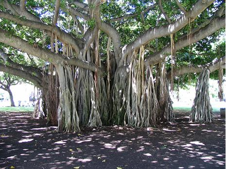

CÂY ĐA MÁU
Trước cửa nhà ông phú hộ Giận, mấy hôm nay cứ có bóng người lượn lờ qua lại. Kể từ khi người Pháp đóng cửa kho thóc thì chỉ có thể kiếm được lúa gạo nhờ phiếu chẩn mà chính phủ Đông Dương phát cho. Trong nước có lắm người chết, xác người chất thành đống nằm la liệt khắp miền thành phố. Kẻ sống thì vạ vật chẳng khác nào cái xác khô lượn lờ qua lại, hệt như bóng quỷ u linh lẩn khuất trong màn đêm
Thời buổi này lương thực khan hiếm, năm trước thì hộ có tiền cũng có thể ngẩng cao đầu mà hưởng sự sung túc trong khi loạn lạc. Thế nhưng sang đến năm nay thì dù có tiền cũng chẳng thể mua nổi gạo, tiền vàng để mốc trong nhà mà không dùng được. Phú hộ hay kẻ giàu có, thành ra cũng chẳng khác gì dân đen chân đất mắt toét, lắm khi còn phải tha hương cầu thực hệt như khất dân.
Nhà ông phú hộ Giận sở dĩ còn có thể trụ được đến giờ này, là nhờ có mối quan hệ quen biết với quan cai tổng người Pháp.
Phú hộ Giận có con gái là Thị Nhung, nổi tiếng xinh đẹp trong vùng, được nhiều thiếu gia dân chơi Hà Thành để mắt tới. Phú hộ Giận nhờ đó mà có được nhiều quà cáp và có mối quan hệ rộng với người Pháp, người Nhật để nhận gạo bông.
Ấy vậy mà vẫn có những kẻ của ăn không hết còn thừa thãi đem cho trâu bò ăn, gạo để lâu sợ mốc thì đem nấu rượu, đem thóc ra đốt lò nồi hơi nước.

Mà nhà phú hộ Giận hưởng cuộc sung túc trong thời buổi cùng cực trái ngược với rất nhiều hoàn cảnh éo le xung quanh, lại còn ác ôn độc địa không ra tính người.
Nhiều hôm có người tha thẩn ở cổng nhà, chìa tay xin nắm gạo vãi mà còn bị phú hộ Giận cho người làm ra đe thẳng tay, cầm gậy gộc nện cho đến chết chỉ vì quấy rầy giấc ngủ trưa của ông ta.
Cánh người làm của phú hộ Giận buổi ấy có tên hầu Lý là nổi danh nhất, được phú hộ Giận tin cẩn cho cầm đầu bè đảng tay sai, hễ có khất dân đến làm phiền là đuổi đánh.
"Không đủ thì rèn, vả lại làm lớp trưởng, con sẽ được thầy cô ưu tiên, rành những phong trào ở trường, làm quen với các bạn nhanh hơn, oai lắm chứ, mẹ?"
Cánh người làm của phú hộ Giận buổi ấy có tên hầu Lý là nổi danh nhất, được phú hộ Giận tin cẩn cho cầm đầu bè đảng tay sai, hễ có khất dân đến làm phiền là đuổi đánh.